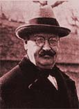
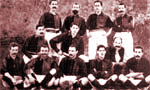
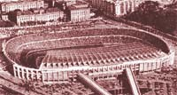

On the 29th of November 1899, Joan Gamper founded the Football Club Barcelona ( Barça). Gamper chose the famous blue and claret as the team colours for they are the colours of the Swiss canton he came from. The myth was born: Kubala, Suárez, Cruyff, Maradona and Ronaldinho, among many others, have signed up for this Club. During the 20th century, "Barça" has become a Barcelona symbol, a symbol that represents the Catalan identity as a nation. That's why it is said that "Barça" is more than a Club.

In the Solé Gym office, on the 29th of November 1899, Gamper met Gualteri Wild, Lluís d'Ossó, Bartomeu Terrados, Otto Kunzle, Otto Maier, Enric Ducal, Pere Cabot, Carles Pujol, Josep Llobet, John Parsons and William Parsons. Eleven sportsmen gathered in order to found a football club. Gualteri Wild was appointed President. The 1st match contested was at the Bonanova Cycle Track and they played against a group of English expatriates who were living in Barcelona. The Englishmen won 1-0. On the 14th of March 1909, the Club inaugurated its 1st own ground at c/Indústria, with a capacity for 6,000 people. At that time, the Barcelona FC obtained their first victories: The Catalan Championships: 1909-10, 1910-11, 1912-13, 1915-16, 1918-19 1919-20, 1920-21, 1921-22 and the Spanish Championships: 1909-10, 1911-12, 1912-13, 1919-20 and 1921-22.

The Les Corts ground (also known as "The Cathedral of Football") was inaugurated on the 20th of May 1922. That stadium had an initial capacity of 30,000 spectators but later doubled to 60,000. In 1924 the Club had already 12,207 members and a big number of supporters laid the foundations of the current social mass. During the season 1928-1929, Barça won brilliantly the 1st edition of the Spanish National League Title and ended, therefore, a period full of titles.

| № | Team | MP | W | D | L | GD | GF/GA | P |
|---|---|---|---|---|---|---|---|---|
| 1 | FC BAYERN | 6 | 6 | 0 | 0 | 19 | 22/3 | 18 |
| 2 | BENFICA | 6 | 2 | 2 | 2 | -2 | 7/9 | 8 |
| 3 | BARCELONA | 6 | 2 | 1 | 3 | -7 | 2/9 | 7 |
| 4 | DYNAMO KYIV | 6 | 2 | 1 | 3 | -10 | 1/11 | 1 |
Marc-André ter Stegen (1)